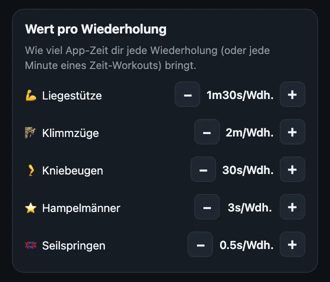

Wie viel Bildschirmzeit sollte ein Liegestütz wert sein?
Hallo zusammen! In HonorFit kauft jede Wiederholung, die du einträgst, App-Zeit, und den Preis legst du selbst fest. Das ist die häufigste Frage, die ich bekomme, sobald jemand die App eingerichtet hat: Was sollte ein Liegestütz wert sein? Eine Minute? Zehn Sekunden? So sehe ich das.
Die Standardwerte
Wenn du nie etwas anfasst, bekommst du das hier:
| Übung | Bringt standardmäßig |
|---|---|
| 💪 Liegestütze | 1 Minute pro Wiederholung |
| 🧗 Klimmzüge | 1m30s pro Wiederholung |
| 🔥 Sit-ups, 🦵 Kniebeugen | 30 Sekunden pro Wiederholung |
| Jede Übung, die du hinzufügst | 30 Sekunden pro Wiederholung |
| Zeit-Workouts (Spazieren, Yoga, HIIT) | 30 Sekunden pro Minute |
| Distanz-Workouts | 5 Minuten pro km oder 8 pro Meile |
| 👟 Schritte | 3 Minuten pro 1.000 Schritte |
20 Liegestütze sind also 20 Minuten Instagram. Für viele passt das zum Einstieg ganz gut. Für andere ist es viel zu großzügig oder viel zu knauserig. Zu wem gehörst du?
Eine Formel in einer Zeile
Denk an zwei Zahlen:
- Wie viel Zeit in deinen gesperrten Apps fühlt sich an einem normalen Tag okay an? Sei ehrlich, nicht ehrgeizig.
- Wie viele Wiederholungen würdest du dafür wirklich machen, über den Tag verteilt?
Dann teilst du: Wert pro Wiederholung = Zeit ÷ Wiederholungen. Du willst eine Stunde TikTok für 60 Liegestütze? 1 Minute pro Wiederholung. Du willst dieselbe Stunde, schaffst aber locker 120 Kniebeugen? 30 Sekunden pro Kniebeuge. Mehr steckt wirklich nicht dahinter.
Wenn die Antwort auf Frage 2 „nicht viele“ lautet, ist das auch in Ordnung. Setz einen hohen Preis pro Wiederholung und nutz eine Tagesbasis (Einstellungen, kostenlos), damit jeder Tag schon mit etwas Zeit auf dem Konto startet.
Ein paar Setups zum Abschauen
| Übung | Jede Wdh. bringt | Was ein Satz bringt |
|---|---|---|
| Liegestütze (Einsteiger) | 1m30s | 10 Liegestütze = 15 Minuten |
| Liegestütze (du machst das schon länger) | 30 Sekunden | 40 Liegestütze = 20 Minuten |
| Hampelmänner | 3 Sekunden | 100 Hampelmänner = 5 Minuten |
| Seilspringen (pro Sprung) | 0,5 Sekunden | 600 Sprünge = 5 Minuten |
| Klimmzüge | 2 Minuten | 5 Klimmzüge = 10 Minuten |
| Laufen (Distanz) | 6 Minuten pro km | ein 5-km-Lauf = 30 Minuten |
Das Muster: Je leichter und schneller eine Wiederholung ist, desto weniger sollte sie wert sein. Ein Hampelmann dauert ungefähr eine Sekunde, also sollte er nicht genauso viel bringen wie ein Klimmzug.
Die Stufen sind in 1.18.0 feiner geworden
Bis vor Kurzem war der kleinste Wert 5 Sekunden. Superschnelle Wiederholungen (Seilspringen, Hampelmänner) ließen sich so schlecht bepreisen, und von 3 auf 10 Minuten zu kommen hat ewig gedauert. Ein Nutzer hat mir zu beidem geschrieben, deshalb gehen die −/+-Buttons in 1.18.0 eine schlauere Leiter entlang:
- Unter 5 Sekunden: 4, 3, 2 und 1 Sekunde, dann 0,5, 0,25 und 0,1 Sekunden.
- 5 Sekunden bis 1 Minute: Schritte von 5 Sekunden.
- 1 bis 3 Minuten: Schritte von 15 Sekunden.
- 3 bis 10 Minuten: Schritte von 30 Sekunden.
- Über 10 Minuten: Schritte von 1 Minute.
Du findest sie an zwei Stellen:
- Einstellungen → Wert pro Wiederholung: eine −/+-Zeile pro Übung. Am schnellsten, wenn du nur einen Preis anpassen willst.
- Einstellungen → Übungen → Bearbeiten: der komplette Editor, in dem du auch Übungen hinzufügst, umbenennst und entfernst und zwischen Wiederholungen, Minuten und Distanz wechselst. Die ganze Anleitung steht in So passt du deine Übungen in HonorFit an.

Anzeichen, dass dein Preis nicht passt
- Du erwischst dich dabei, Wiederholungen einzutragen, die du nicht gemacht hast. Deine Zeit ist zu teuer. Damit sagt dir das Ehrensystem etwas. Stell die Werte Stufe für Stufe höher, bis der Drang weg ist.
- Dein Guthaben geht nie aus. Deine Zeit ist zu billig. Stell die Werte ein, zwei Stufen niedriger oder sperr noch eine App mehr.
- Du machst deine Wiederholungen, aber mit Widerwillen. Wahrscheinlich die falsche Übung, nicht der falsche Preis. Nimm etwas, das du nicht hasst. Ein Spaziergang zählt. Sanftere Übungen auch.
- Du sparst stundenlang an und verpulverst alles am Abend. Schalte Um Mitternacht zurücksetzen ein (kostenlos), damit sich nicht verbrauchte Zeit nicht anhäuft.
Gib jeder neuen Einstellung ungefähr eine Woche, bevor du sie wieder änderst. Die ersten paar Tage fühlen sich so oder so komisch an.
Hart-Modus und Krank-Modus
Für Tage, die nicht zu deinem üblichen Setup passen, gibt es einen 💀 Hart-Modus-Button, den du in die Kopfzeile des Startbildschirms setzen kannst (Einstellungen → Hart- und Krank-Modus, kostenlos). Tipp ihn einmal an, und jede Wiederholung bringt die Hälfte. Tipp noch einmal für den 🤒 Krank-Modus, in dem jede Wiederholung das Doppelte bringt, für Tage, an denen du angeschlagen bist. Noch einmal tippen, und alles ist wieder normal. Deine eigentlichen Werte ändern sich nie, du musst also nichts rückgängig machen.
Ich bin kein Trainer: Ich mache die App, ich bin kein Coach. Wenn eine Übung wehtut, hör auf, und wenn du eine Verletzung oder eine Erkrankung hast, frag jemanden, der deinen Körper kennt, was für dich passt. Und dann richte HonorFit danach ein.
HonorFit Blocker ist ein kostenloser App-Blocker für iPhone und Android. Du wählst die Übungen und was sie wert sind. Ehrensystem, keine Kamera, nichts verlässt dein Handy.